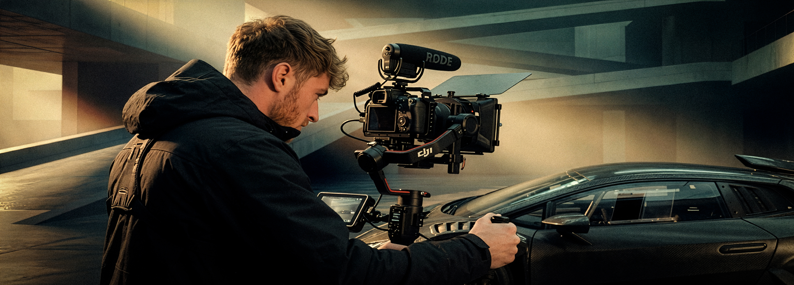

Identity.
013Create is a multi-disciplinary media production house led by Adam Gofton, specialising in the visual architecture of the automotive, hospitality, and luxury lifestyle sectors.
With a signature style, Adam produces high-production-value content that bridges the gap between technical precision and emotional narrative.
From the engineering soul of a prestige vehicle to the atmospheric nuances of high-end interiors and culinary arts, his work is defined by a relentless pursuit of bespoke quality.
With a portfolio that includes commercial assets for global brands such as Porsche, Red Bull, and Hilton, Adam brings a refined aesthetic and a commercial-grade workflow to every project.
Whether capturing a marquee event, documenting a bespoke vehicle build, or crafting a brand film for a luxury hotel, 013Create delivers visual assets designed to command attention and reflect the excellence of the clients they represent.
Visual Architecture.
Operating across the UK and globally, 013Create combines over a decade of experience documenting prestige vehicles with modern high-end production standards.
Utilising state-of-the-art camera systems to deliver 4K cinema-grade video and industry-leading high-resolution stills.
Our capabilities include professional aerial photography and videography, supported by cinema-grade rigging and stabilisation to ensure precision in every frame.
FAQ.
Is 013Create available for international commissions?
Yes. While we are based in the UK, we are fully equipped for worldwide travel and have extensive experience managing media production for international automotive launches and luxury brand campaigns across the globe.
What are your rates for production?
Every project at 013Create is unique. We provide tailored quotes based on your specific budget, location requirements, and the scope of expected deliverables. Whether it's a single-day editorial shoot or a multi-location brand campaign, we work closely with you to ensure maximum production value for your investment.
What deliverables can I expect from a brand film shoot?
We provide master 4K cinema-grade films tailored for web and broadcast, alongside optimised social media assets (Reels/Shorts) to ensure your content performs across all digital platforms.
Do you handle both stills and motion on a single production?
Absolutely. Our workflow is designed to provide a cohesive visual identity across both photography and film, ensuring total brand consistency across your entire campaign.